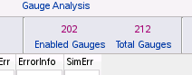

Use the mdf filter apply command to manually filter data from the visible gauges in the Gauge Analysis tab. Some examples:
mdf filter apply {sort:$SimErr top 10}
Filters out all gauges except the top ten highest simulation errors. (Similarly, you can specify ‘bottom’ to get the lowest values.)
mdf filter apply {$Meas < 160}
Filters out any gauges whose measured values are greater than or equal to 160nm.
Use the figure and table to learn the methods available in the interface to filter out gauges in the Cross Probe & Filter tab (green circle at the top of the figure).
Method |
Description |
See Also |
|
|---|---|---|---|
1 |
Highlighting controls |
Selects gauges in the layout for further operations. |
|
2 |
Enabling controls |
Enables or disables selected gauges. Disabled gauges are not simulated or calibrated. The number of enabled gauges versus total gauges is shown at
the top of the Gauge Analysis tab.
 |
|
3 |
Filtering controls |
Shows only gauges that meet filtering criteria. The Filter Expression entry field can contain any Tcl Boolean expression. Filter expressions are considered a substring match. To specify an exact match of a filter expression, specify “==” before the string. Right-clicking the filter icon in the column header shows a checkbox list of all items in that column for multiple selection purposes. |
|
4 |
Filter pulldown |
Shows only gauges that match a previously-defined filter in the Filters database. |
|
5 |
Interactive column header |
Filters gauges based on a Tcl equality (==), inequality, or string match expression you enter in the text field under a column header. |